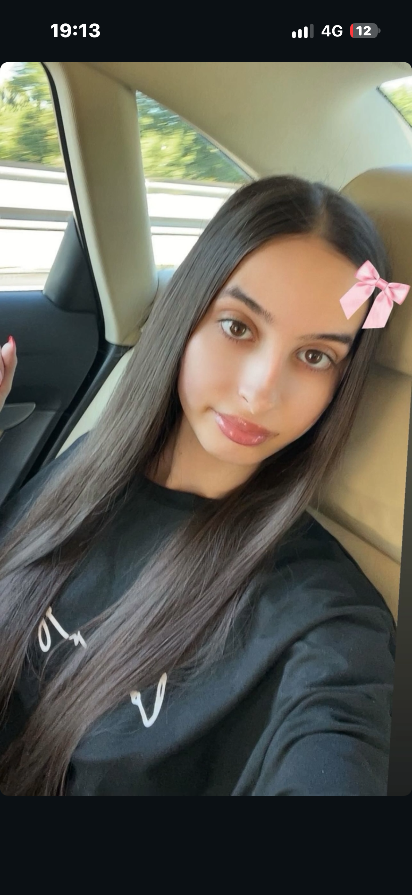

AFACERE CORDOANATĂ DIN SPATELE BANCHETULUI! Tânără suspectată că vindea substanțe interzise ascunse în accesorii de păr

București. Anchetatorii au descins în această după-amiază la mai multe adrese din capitală, într-un dosar ce vizează vânzarea ilegală de substanțe interzise de mare risc către tineri.
Surse din cadrul poliției afirmă că suspecta principală folosea un stil de viață aparent inofensiv și accesorii colorate pentru a nu trezi suspiciuni în timpul livrărilor. Tranzacțiile se făceau rapid, direct din mașini aflate în mișcare, pentru a îngreuna filajul structurilor antidrog.
În urma perchezițiilor, telefoanele folosite pentru coordonarea rețelei au fost ridicate pentru expertiză informatică. Suspecta riscă o pedeapsă grea cu închisoarea dacă acuzațiile vor fi probate în instanță.